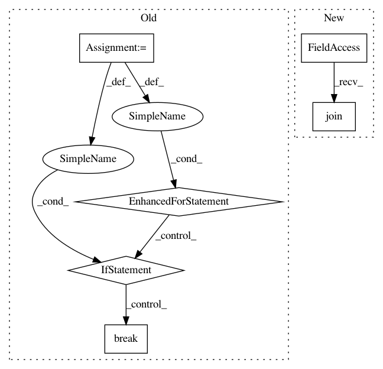

c7823a52d38202ea336ac8585bb440c01ce1f304,batchflow/monitor.py,ResourceMonitor,stop,#ResourceMonitor#,79
Before Change
def stop(self):
Stop separate process; append collected data to the already stored.
for child in self.parent_process.children(recursive=False):
if child.pid == self.pid_to_kill:
child.kill()
break
data = self.shared_list
data.append(self.function(pid=self.pid, **self.kwargs))
self.end_time = time.time()
self.running = False
After Change
def stop(self):
Stop separate process.
self.stop_queue.put(True)
self.process.join()
self.running = False
def visualize(self):
In pattern: SUPERPATTERN
Frequency: 4
Non-data size: 6
Instances
Project Name: analysiscenter/batchflow
Commit Name: c7823a52d38202ea336ac8585bb440c01ce1f304
Time: 2020-08-14
Author: Tsimfer.SA@gazprom-neft.ru
File Name: batchflow/monitor.py
Class Name: ResourceMonitor
Method Name: stop
Project Name: tensorflow/tensorflow
Commit Name: 448e080c752a1b5f54c422401b41e824b0274a91
Time: 2020-11-17
Author: crccw@google.com
File Name: tensorflow/python/distribute/multi_process_lib.py
Class Name:
Method Name: _set_spawn_exe_path
Project Name: tensorflow/tensorflow
Commit Name: de336139770c6e9e035c0e402375efda48d75301
Time: 2020-11-18
Author: crccw@google.com
File Name: tensorflow/python/distribute/multi_process_lib.py
Class Name:
Method Name: _set_spawn_exe_path
Project Name: kubeflow/kubeflow
Commit Name: 9741891897a68941e5b01dcdc20468701ea633db
Time: 2019-11-04
Author: gabrielwen@google.com
File Name: py/kubeflow/kubeflow/ci/kfctl_go_test_utils.py
Class Name:
Method Name: kfctl_deploy_kubeflow